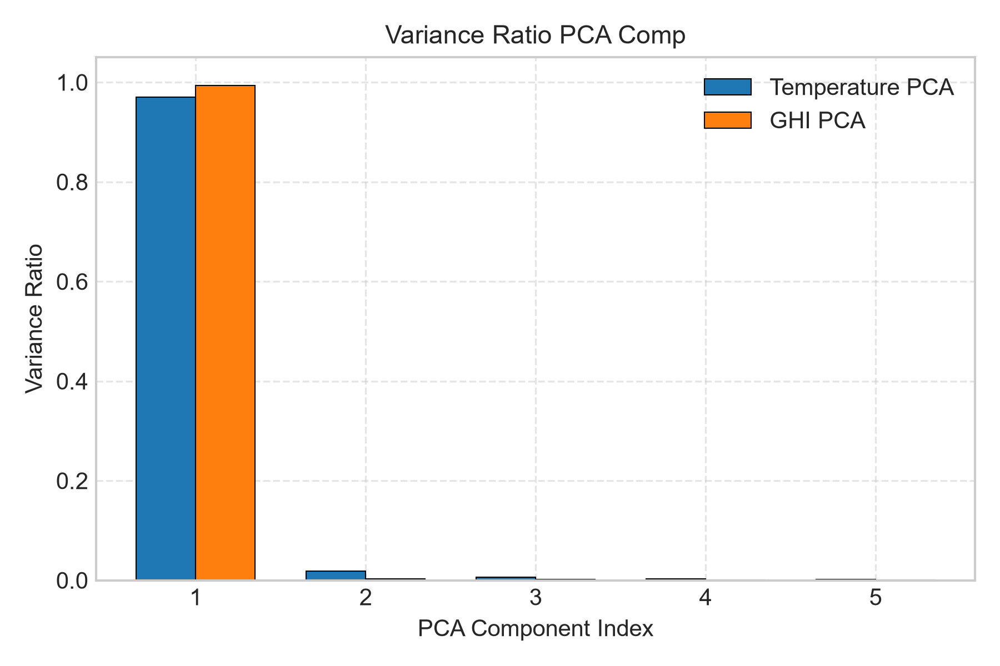
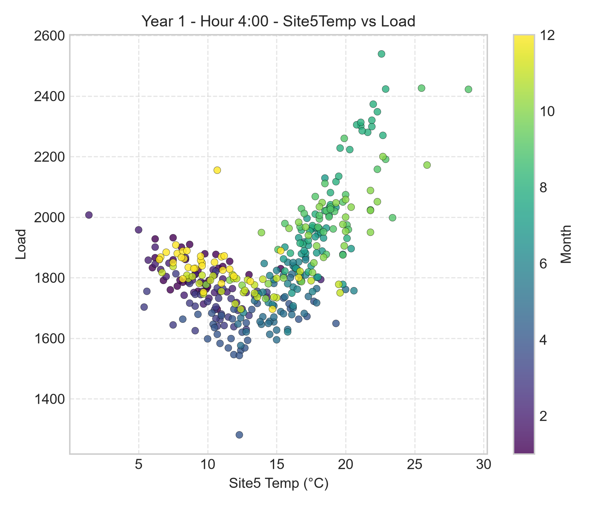
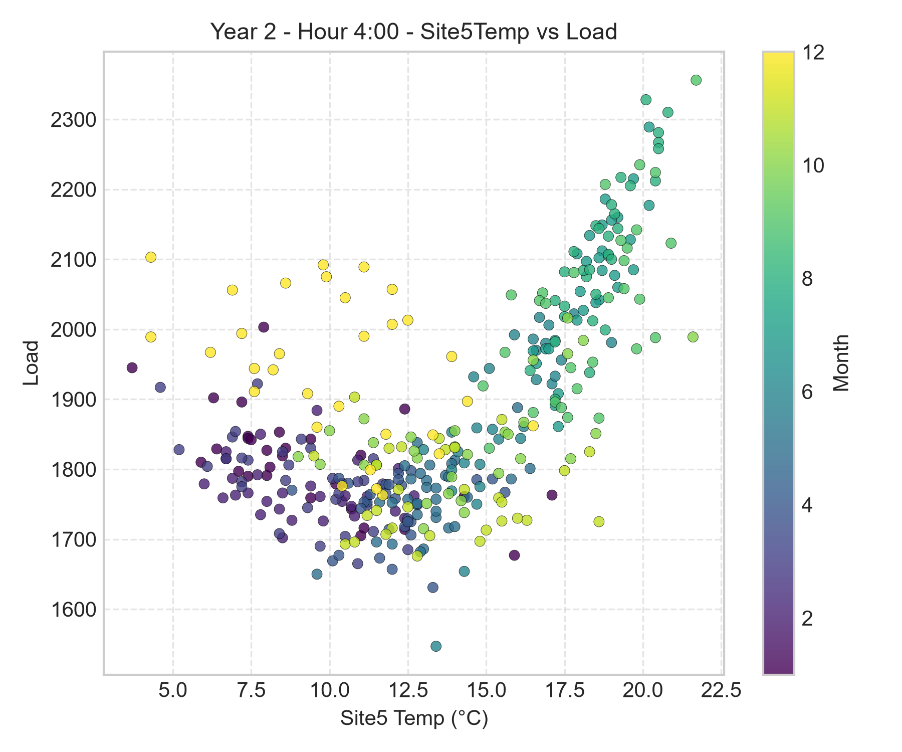
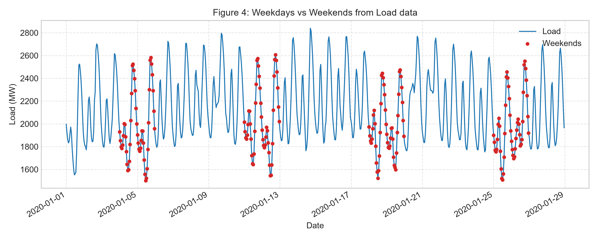
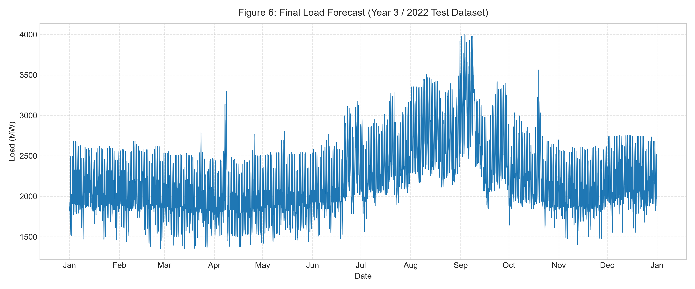
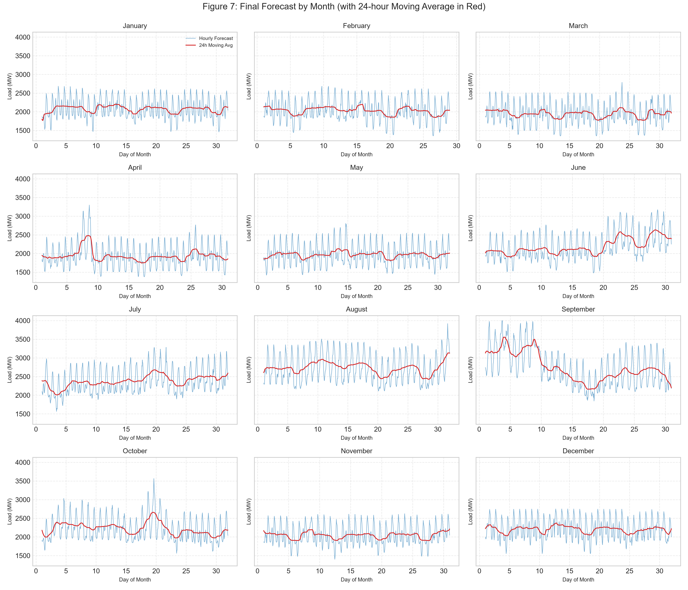
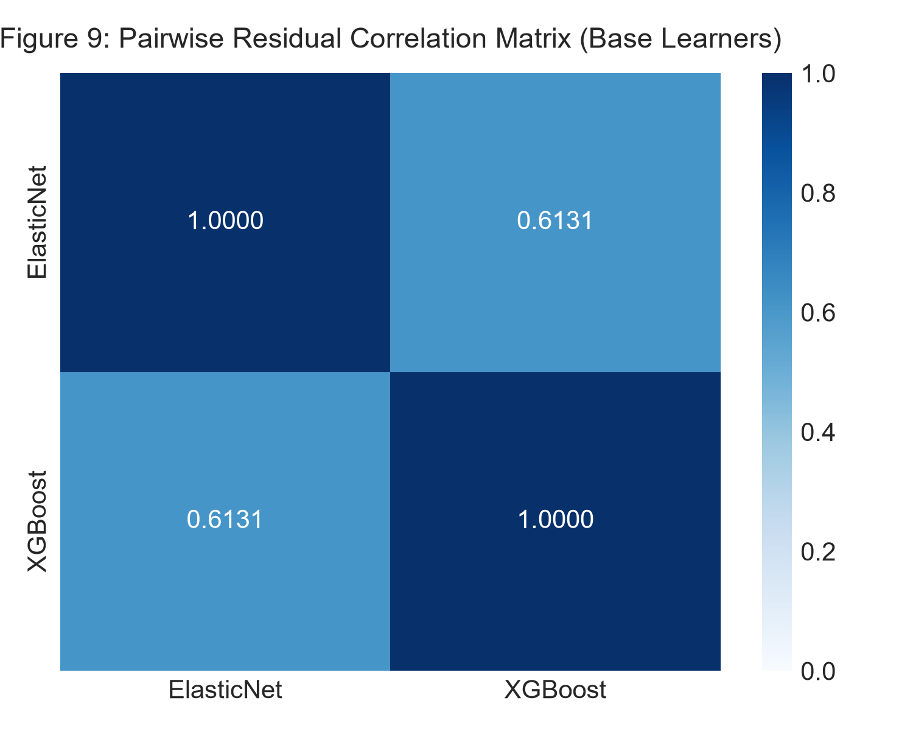
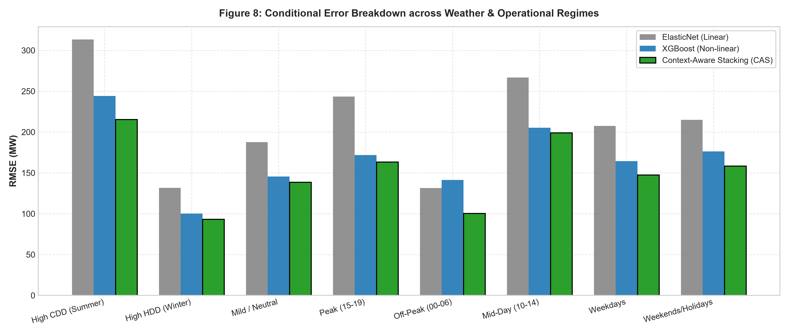
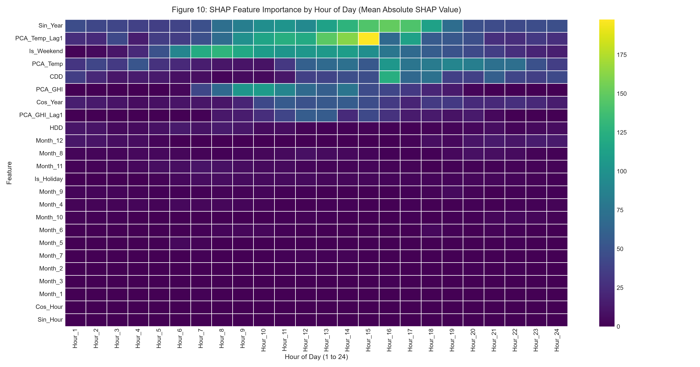
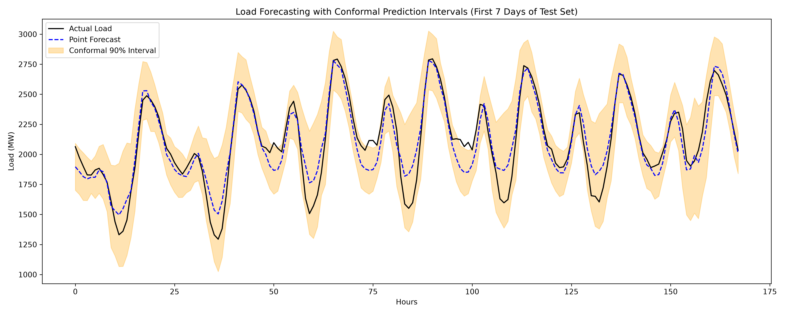

Context-Aware Dual-Regime Stacking Ensemble với Physics-Informed Feature Engineering cho Dự báo Phụ tải Điện Giờ
Nhóm tác giả: Debug Team
Nguyễn Thị Diễm My • Lê Tiến Anh • Nguyễn Mạnh Tân • Hoàng Nguyễn Nhật Minh • Lê Minh Hoàng
Tóm tắt Nghiên cứu (Abstract)
Nghiên cứu này thuộc lĩnh vực Machine Learning ứng dụng trong Hệ thống Năng lượng Thông minh, giải quyết bài toán Dự báo Phụ tải Điện Ngắn hạn (STLF) theo từng giờ trên lưới điện của PG&E tại California. Khởi nguồn từ việc tái lập công trình đối chuẩn của Roy et al. (arXiv:2505.11390) tại cuộc thi IISE PG&E Energy Analytics Challenge 2025, chúng tôi xác thực luận điểm rằng các mô hình dạng bảng phân đoạn theo giờ (24 mô hình XGBoost) vượt trội hơn Transformers (PatchTST, Informer, Autoformer). Tuy nhiên, nhận diện 3 khoảng trống lớn về thiếu tri thức nhiệt động lực học công trình, sự gián đoạn của biến giả tháng và bỏ ngỏ đa dạng sai số mô hình, nhóm đề xuất khung phương pháp mở rộng:
1. Physics-Informed Features
Heating & Cooling Degree Days (HDD/CDD ở ngưỡng 18°C) + Chuỗi điều hòa Fourier liên tục.
2. Dual-Regime Discovery
Phát hiện tương quan phần dư thấp (r=0.6131): ElasticNet thắng ban đêm, XGBoost thắng nắng nóng cực đoan.
3. Context-Aware Stacking
Meta-learner LightGBM điều hòa theo ngữ cảnh thời gian thực, tự động định tuyến độ tin cậy tối ưu.
Trên tập kiểm tra độc lập Year 3 (2022, 8,760 giờ), mô hình CAS đề xuất đạt kỷ lục với RMSE 141.81 MW, MAPE 4.75%, và $R^2 = 0.9136$, cắt giảm −29.03 MW (−17.0% RMSE) so với baseline gốc của bài báo.
1. Giới thiệu & 2. Bài toán Nghiên cứu
Cân bằng công suất tức thời trong lưới điện: $$\sum_{i} P_{\text{gen}, i}(t) = \sum_{j} P_{\text{load}, j}(t) + P_{\text{loss}}(t)$$ là tôn chỉ an toàn tuyệt đối. Mọi sai số dự báo phụ tải đỉnh đều buộc các nhà vận hành hệ thống điện (ISO) phải huy động công suất phát dự phòng quay (*spinning reserve*) với chi phí thị trường giao ngay khổng lồ.
Bài toán tìm hàm ánh xạ tối ưu $f^*: \mathbb{R}^D \to \mathbb{R}^+$ cực tiểu hóa hàm mất mát bình phương trung bình: $$f^* = \argmin_{f \in \mathcal{F}} \; \mathbb{E}_{(\mathbf{x}_t, y_t) \sim \mathcal{D}} \left[ \big(y_t - f(\mathbf{x}_t)\big)^2 \right]$$ với vector đầu vào $\mathbf{x}_t = [\mathbf{x}_t^{\text{temporal}}, \mathbf{x}_t^{\text{weather}}, \mathbf{x}_t^{\text{dynamics}}, \mathbf{x}_t^{\text{physics}}]^T$.
4. Phương pháp Nghiên cứu (CAS Architecture)
Khử Đa cộng tuyến qua PCA
Chỉ số VIF của nhiệt độ và bức xạ mặt trời trước khi xử lý lên tới $52.70$ và $1055.70$. Sau khi chiếu sang thành phần chính thứ nhất, $\text{VIF}(\text{PCA\_Temp}) = 2.47$ và $\text{VIF}(\text{PCA\_GHI}) = 2.07$, giải thích lần lượt $>91.5\%$ và $>88.2\%$ phương sai không gian.
Đặc trưng Nhiệt động lực học HDD & CDD
Dựa trên ngưỡng tiện nghi ASHRAE $18.0^\circ\text{C}$: $$\text{HDD}_t = \max\left(18.0 - \bar{T}_t, \, 0\right), \quad \text{CDD}_t = \max\left(\bar{T}_t - 18.0, \, 0\right)$$
Định tuyến Ngữ cảnh Meta-Learner
Vector đầu vào meta-learner LightGBM: $$\mathbf{z}_t = \left[ \hat{y}_{\text{enet}, t}^{\text{OOF}}, \; \hat{y}_{\text{xgb}, t}^{\text{OOF}}, \; \mathbf{x}_{\text{context}, t} \right]^T$$

Hình 3: Tỷ lệ phương sai tích lũy của PCA trên 5 trạm Nhiệt độ và 5 trạm GHI.
5. Dữ liệu & Phân tích Khám phá (EDA)
Tập dữ liệu PG&E 3 năm (2020--2022) gồm 26,304 giờ quan sát. Đồ thị phân tán giữa phụ tải và nhiệt độ thể hiện rõ nét quan hệ chữ U phi tuyến tính: phụ tải đạt cực tiểu quanh 18°C và tăng vọt khi nhiệt độ vượt 25°C.

Hình 1: Quan hệ Phụ tải - Nhiệt độ Trạm 5 (Năm 1 / 2020)

Hình 2: Quan hệ Phụ tải - Nhiệt độ Trạm 5 (Năm 2 / 2021)

Hình 4: Phân phối Đồ thị Phụ tải Ngày làm việc vs Cuối tuần / Nghỉ lễ
6. Kết quả Thực nghiệm (Master Benchmark)
| Cấu hình Mô hình | Số biến | R² ↑ | RMSE (MW) ↓ | MAE (MW) ↓ | MAPE ↓ | Cải thiện vs Gốc |
|---|---|---|---|---|---|---|
| 1. Original Baseline (24-XGBoost, Lag1) | 18 | 0.8734 | 171.66 | 120.77 | 5.41% | Baseline |
| 2. 24-XGBoost + Fourier Harmonics | 22 | 0.8880 | 161.41 | 115.02 | 5.14% | −10.25 MW |
| 3. 24-XGBoost + Fourier + HDD/CDD | 24 | 0.8891 | 160.65 | 114.74 | 5.14% | −11.01 MW |
| 4. Single-XGBoost Toàn cục (Gồm Hour) | 19 | 0.8902 | 159.88 | 116.12 | 5.21% | −11.78 MW |
| 5. Proposed Context-Aware Stacking (Mặc định) | 24 | 0.9046 | 148.98 | 106.98 | 4.99% | −22.68 MW |
| 6. Proposed Context-Aware Stacking (Optuna-Tuned) | 24 | 0.9136 | 141.81 | 101.40 | 4.75% | −29.03 MW (−17.0%) |
Đường cong Dự báo Năm thứ 3 (Year 3 / 2022)

Hình 6: So sánh Phụ tải Thực tế và Dự báo của Mô hình CAS trên toàn bộ 8,760 giờ Năm 2022.

Hình 7: Phân rã Đường cong Phụ tải Dự báo so với Thực tế theo từng tháng trong Năm 2022.
7. Ablation Study & Khám phá Dual-Regime
Ma trận Tương quan Phần dư Sai số
Tương quan phần dư Pearson giữa ElasticNet và XGBoost chỉ đạt $r = 0.6131$. Mức độ độc lập cao này khẳng định hai mô hình mắc các sai số không đồng nhất, tạo điều kiện hoàn hảo để CAS kết hợp.

Hình 9: Ma trận Tương quan Phần dư (r=0.6131)
Phân rã Sai số RMSE (MW) theo 8 Chế độ Vận hành
| Chế độ Vận hành | Số mẫu | ElasticNet | XGBoost | Mô hình tốt hơn | CAS Đề xuất | Lợi ích Ensemble |
|---|---|---|---|---|---|---|
| Phụ tải nền ban đêm (00:00--06:00) | 2,190 | 131.33 | 141.37 | ElasticNet | 100.50 | +30.83 MW |
| Sóng nhiệt mùa hè (CDD > 3°C) | 2,196 | 313.27 | 244.16 | XGBoost | 215.44 | +28.72 MW |
| Cao điểm chiều tối (15:00--19:00) | 1,825 | 243.48 | 171.72 | XGBoost | 163.45 | +8.27 MW |
| Mùa đông sưởi ấm (HDD > 5°C) | 1,798 | 131.74 | 100.14 | XGBoost | 93.25 | +6.90 MW |
| Giữa trưa bức xạ cao (10:00--14:00) | 1,825 | 266.69 | 205.26 | XGBoost | 199.17 | +6.09 MW |

Hình 8: So sánh Sai số RMSE giữa ElasticNet, XGBoost và CAS theo 8 Chế độ Vận hành.
Biểu đồ Nhiệt SHAP 24 Giờ (Động học Đặc trưng Nhật triều)

Hình 10: Tầm quan trọng động học của các đặc trưng theo 24 giờ trong ngày.
10. Hướng dẫn Tái lập Thực nghiệm (1-Click Command)
1. Tải repository từ GitHub:
2. Tái lập kết quả baseline của bài báo gốc:
3. Chạy toàn bộ pipeline nghiên cứu mở rộng CAS:
11. Định lượng Độ Bất định (Conformal Prediction) & Kết luận
Nhóm đã bước đầu tích hợp thành công thuật toán Conformal Prediction nhằm tạo ra các khoảng tin cậy khả tín 95% có bảo đảm thống kê không phụ thuộc phân phối:

Hình 11: Khoảng Dự báo Tin cậy 95% bằng Conformal Prediction trên Chuỗi Phụ tải.